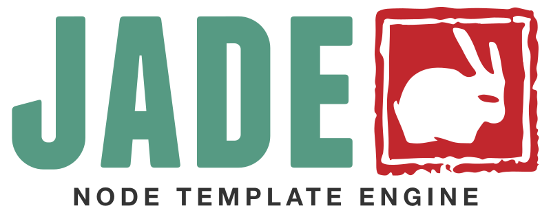
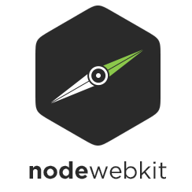
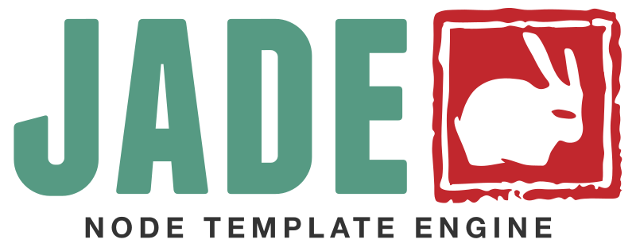
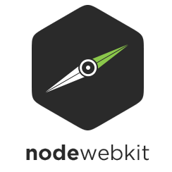

What is it ?
A simple clock that conforms to the pomodoro technique, with a list of tasks that gathers information about your day
Why ?
- Concentration is hard, and is almost impossible if you don't
have a fixed amount of time to be concentrated.
- The pomodoro technique is a procrastination killer, by focusing on the proccess and not the outcome you avoid
feeling dismotivated
-
interruptions are evil, when you have a clock running you tend to avoid interruptions
-
sitting all day gonna kill you, and it also affects your disposition and your mood.
-
After sometime you get used to thinking about tasks in chunks of 30 min, you also realize that you spend a lot less time working than you think
How to install
- Download and unzip it
- Windows:
- Search for the executable, run as administrator
- The app will create a folder in your home directory, this folder have your data and a config file
- Mac:
- Search for the application file and run it
- The app will create a folder in your home directory, this folder have your data and a config file
Syncing your data
- You can sync your data in multiple machines, just put your data.json file inside a storage service like dropbox or google drive, then change the data path on the config.json file, you can find out where's your config.json is by clicking on the cog icon
-
You can also use AWS S3 to store you data, fill out your accessKeyId and secretAccessKey on your config.json file, and that's it everything should be synced with your remote folder.
 and..
and.. 


